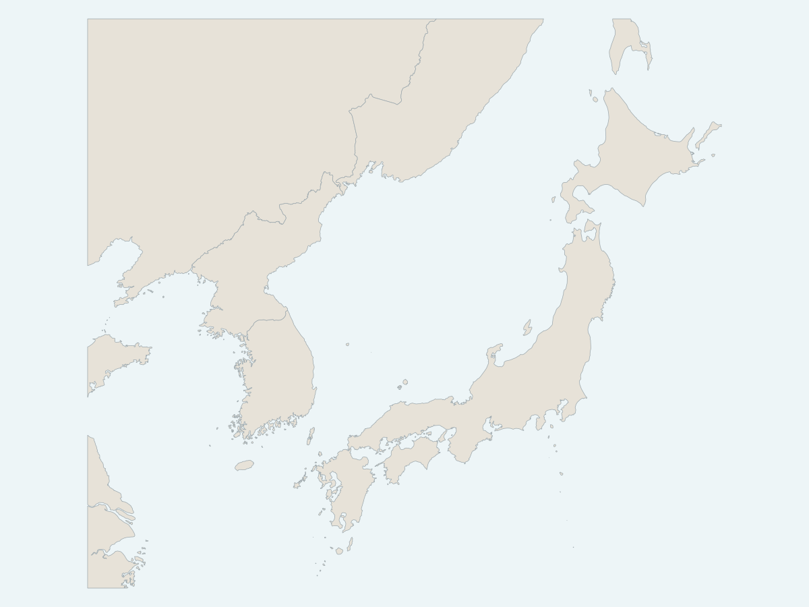

What is the correct name for this sea?
The geography is the same. The answer depends on where you stand.

Japan
Sea of Japan
Official government usage.
South Korea
East Sea
Official government usage.
North Korea
Korean East Sea
Official government usage.
International usage
Sea of Japan
Predominant label on international maps.
The geography is fixed. The label carries perspective. The same sea can appear under different names depending on who is making the map.
What else on a map might look objective but carry a point of view?
Context: the naming dispute is unresolved. Hanten is not choosing a preferred name here; the exhibit shows how map labels can carry history, politics, language, and perspective along with geography.